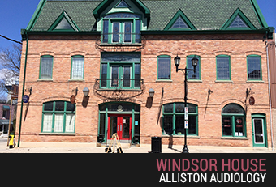

Alliston Audiology
.

At Alliston Audiology and the Orangeville hearing clinic, we take your hearing health care needs seriously.
We know that hearing well is part of living well. Using our expertise, we will work with you and use the latest technologies to assess hearing, prevent hearing loss and help hearing loss. If you do have a permanent hearing loss, we will discuss options relevant to your lifestyle needs.
"Taking care of your hearing needs can not only improve your hearing, but your quality of life as well!"